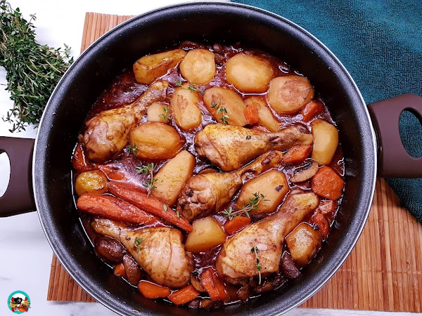

Casuela de pollo con verduras

Descripcion de la cazuela de pollo y verduras.
Esta receta me la enseño mi madre a la cual se lo enseño mi abuela, es decir siempre estuvo presente en nuestros dias de frios, aunque muchas veces se suele hacer en dias de calor, tu decides, puedes agregarle infinidad de verduras, al igual que puedes cambiar el pollo por mariscos, carne de res, cerdo, o simplemente puede hacerlo solo de verduras que te queda excelente.
Ingredientes:
- *receta para 4/5 personas
- *2 pechugas de pollo
- *4 tomates medianos
- *4 zanahorias grandes
- *2 pimientos rojos grandes
- * 2 papas
- *4 cebollas
- *2 dientes de ajo
- *sal
- *condimentos, pimienta, pimenton dulce, aregano
- *caldo de pollo
Pasos
- Comenzaremos con la verduras lavadas
- Las cebollas y el ajo, cortamos en cuadritos pequeños
- Las pechugas de pollo las cortamos en tiras o cuados como guste
- Las colocamos todo en una olla grande
- a fuesgo medio bajo dejamos que se caramelice todo
- A continuacion el pimiento cortado en trozos
- La zanahoria en rodajas no muy gruesas
- Las agragamos y dejamos tapado por 5 minutosb
- Agregamos el tomate en trozos
- Tapamos por unos 10 minutos y el tomate dejara todo su jugo, ya que contine mucho liquido
- Condimentamos con sal y las especias (a gusto)
- Agregamos dos tazas de agua y tapamos
- Pasado 10 minutos agregamos las papas y dejamos cocinar todo junto
- Cuando la papa este lista ya puedes emplatar
- A eleccion al terminar de emplatar le agrego por encima perejil picado.
Este es un párrafo de ejemplo.